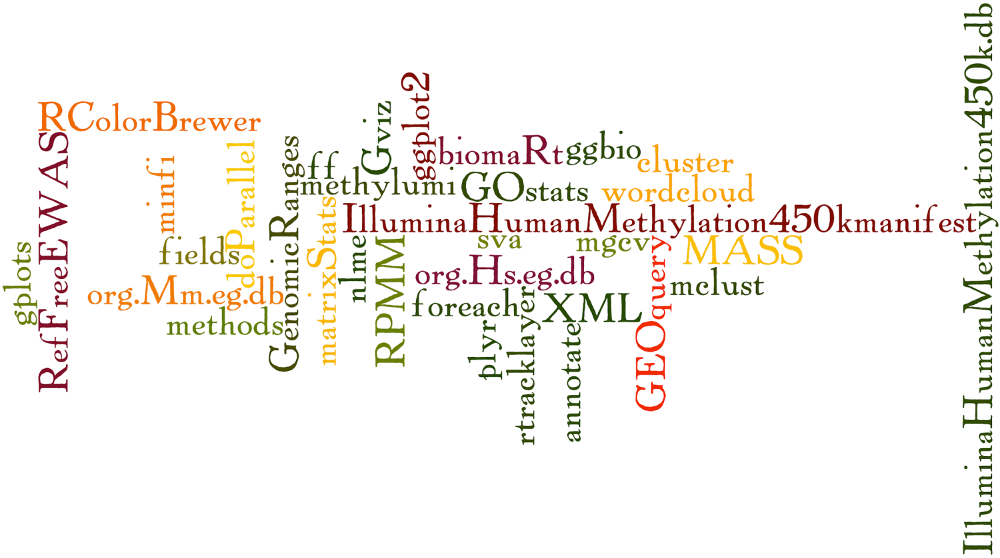

We would also like to emphasize that RnBeads makes extensive use of other R packages, and it may be appropriate to cite some of the underlying methods and contributing packages as well.

Infinium data processing
Davis, S., Du, P., Bilke, S., Triche, T., Bootwalla, M. (2013) methylumi: Handle Illumina methylation data. R package version 2.6.1.
Filtering cross-reactive and SNP-overlapping probes
Chen, Y., Lemire, M., Choufani, S., Butcher, D.T., Grafodatskaya, D., Zanke, B.W., Gallinger, S., Hudson, T.J., Weksberg, R. (2013) Discovery of cross-reactive probes and polymorphic CpGs in the Illumina Infinium HumanMethylation450 microarray. Epigenetics, 8(2), 203-209
Nordlund, J., Bäcklin, C. L. et al. (2013) Genome-wide signatures of differential DNA methylation in pediatric acute lymphoblastic leukemia. Genome Biology, 14:r105
Pidsley, R., Zotenko, E., Peters, T.J., Lawrence, M.G., Risbridger, G.P., Molloy, P., Djik, S.V., Muhlhausler, B., Strizaker, C., Clark, S.J. (2016) Critical evaluation of the Illumina MethylationEPIC BeadChip microarray for whole-genome DNA methylation profiling. Genome Biology, 17(1), 208
Background correction
Triche, T.J., Jr., Weisenberger, D.J., Van Den Berg, D., Laird, P.W., Siegmund, K.D. (2013). Low-level processing of Illumina Infinium DNA Methylation BeadArrays. Nucleic Acids Res, 41(7), e90.
Fortin, J., Labbe, A., Lemire, M., Zanke, B.W., Hudson, T. J., Fertig, E.J., Greenwood, C.M.T., Hansen, K.D. (2014) Functional normalization of 450k methylation array data improves replication in large cancer studies. BioRxiv.
SWAN, functional normalization
Aryee, M.J., Jaffe, A.E., Corrada-Bravo, H., Ladd-Acosta, C., Feinberg, A.P., Hansen, K.D., Irizarry, R.A. (2014) Minfi: a flexible and comprehensive Bioconductor package for the analysis of Infinium DNA methylation microarrays. Bioinformatics 30(10), 1363-1369
BMIQ
Teschendorff, A.E., Marabita, F., Lechner, M., Bartlett, T., Tegner, J., Gomez-Cabrero, D., Beck, S. (2013) A beta-mixture quantile normalization method for correcting probe design bias in Illumina Infinium 450 k DNA methylation data. Bioinformatics 29(2), 189-196.
Data-driven normalization approaches
Pidsley, R., Wong, C., Volta, M., Lunnon, K., Mill, J., Schalkwyk, L. (2013) A data-driven approach to preprocessing Illumina 450K methylation array data. BMC Genomics, 14(1), 293.
Schalkwyk, L.C., Pidsley R., Wong C.C., Touleimat, W.C.F.N., Defrance M., Teschendorff A., Maksimovic J. (2013). wateRmelon: Illumina 450 methylation array normalization and metrics. R package version 1.4.0.
Genome-wide coverage plots in quality control for bisulfite sequencing data
Yin, T., Cook, D., Lawrence, M. (2012). ggbio: an R package for extending the grammar of graphics for genomic data. Genome Biology, 13(8), pp. R77.
Differential methylation using the "limma" method
Smyth, G.K. (2005). Limma: linear models for microarray data. In Gentleman R, Carey, V., Dudoit., S., Irizarry R., Huber W. (eds.), Bioinformatics and Computational Biology Solutions Using R and Bioconductor, pp. 397-420. Springer, New York.
Reference-based cell type heterogeneity estimation
Houseman, E.A., Accomando, W.P., Koestler, D.C., Christensen, B.C., Marsit, C.J., Nelson, H.H., Wiencke, J.K., Kelsey, K.T. (2012). DNA methylation arrays as surrogate measures of cell mixture distribution. BMC Bioinformatics 13:86.
Reference-free correction for cell type heterogeneity
Houseman, E.A., Molitor, J., Marsit, C.J. (2014). Reference-Free Cell Mixture Adjustments in Analysis of DNA Methylation Data. Bioinformatics, btu029.